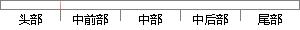

目前，ML还没有一个统一且准确的定义。
片段位置图

相似结果|
相似片段 1：，正在演变为港口所参与的供应链之间的竞争。第三代港口特征已经无法准确地描述现代港13发展的功能特征，引入一个新的港13功能概念将有利于港El在进一步发展中把握发展方向。在这种情况下。第四代港口应运而生。目前，学术界关于第四代港13还没有统一的定义，本文比较认同的概念如下：第一。
相似片段 2：但对于“碳足迹”的准确定义目前还没有统一，不同学者或机构有着各自不同的理解。碳足迹的计基金项目：国家自然科学基金资助项目(41301643，71373003，41401636)；辽宁省社会发展攻关
相似片段 3：1．2复杂性科学什么是复杂性科学?我们可以很清楚的给出其定义：研究复杂性的科学。但是什么又是复杂性(Complexity)呢?对于这个问题目前在科学界还没有一个统一、确切的回答，原因有二：第一、对于
相似片段 4：。总之，目前生存性的定义在学术界和产业界还没有统一起来，随着研究的深入和普遍，未来的生存性定义必将走向统一化、规范化。虽然暂时还没有能力提出一个能够规范认可的定义，但是通过现有的研究与分析，我们认为
|
※ 片段修改建议 ※
近似词参考：- 目前：今朝 现在
- 还没有：尚未 尚无
- 统一：同一
- 准确：精确 正确
- 定义：界说
系统自动生成语句：今朝，ML尚未一个同一且精确的界说。
注：本片段修改建议为系统自动生成，仅供参考。